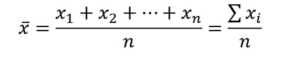

Media | Media aritmética | Promedio
La media es el valor que se obtiene al sumar todos los datos y dividir el resultado entre la cantidad de datos.La fórmula es la siguiente:
Mediana
La mediana es el valor que ocupa la posición central cuando todos los datos estan ordenados en orden ascendente o descendente.La mediana se representa con las letras: Me
Moda
La moda es el valor que más se repite. También podemos decir que la moda es el valor con mayor frecuencia absoluta o el valor que ocurre con más frecuencia.La moda se representa con las letras: Mo
Información tomada de matemovil